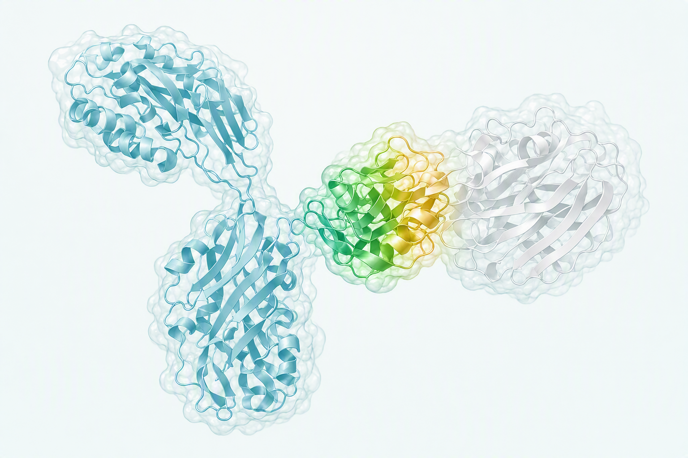
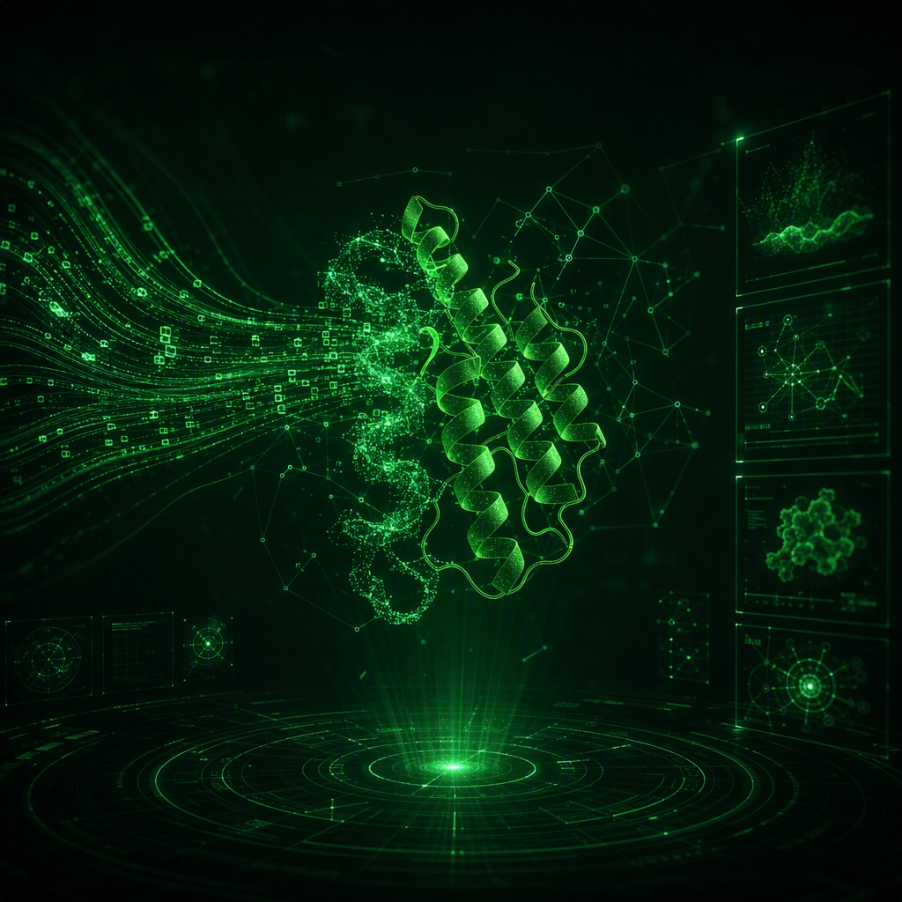
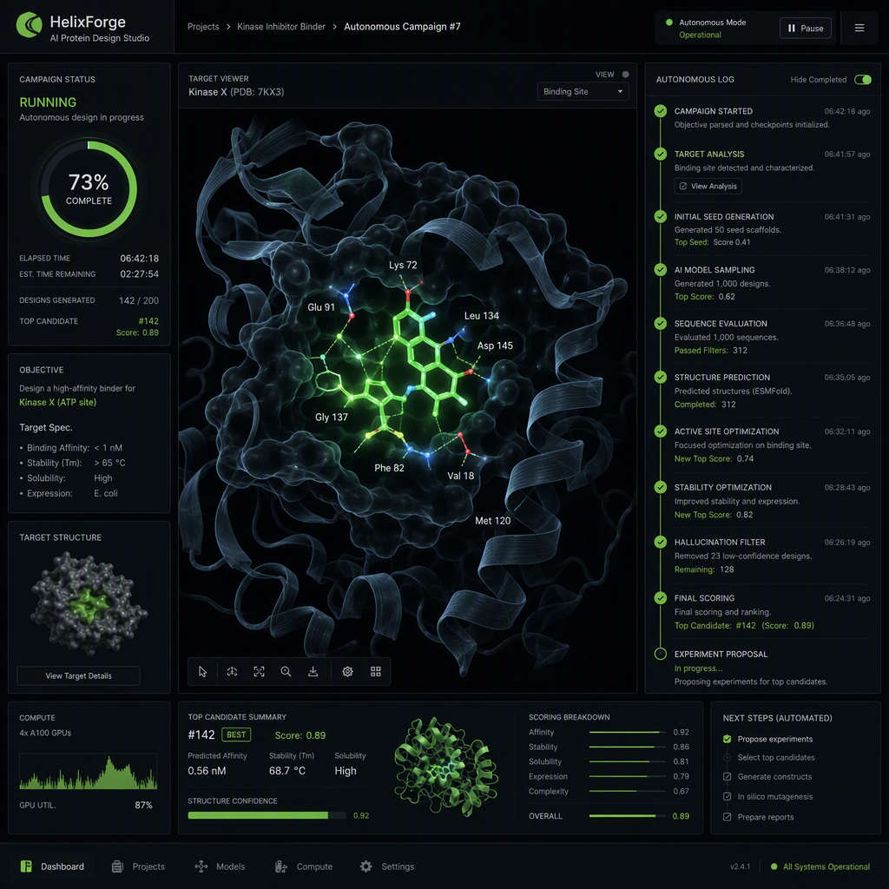
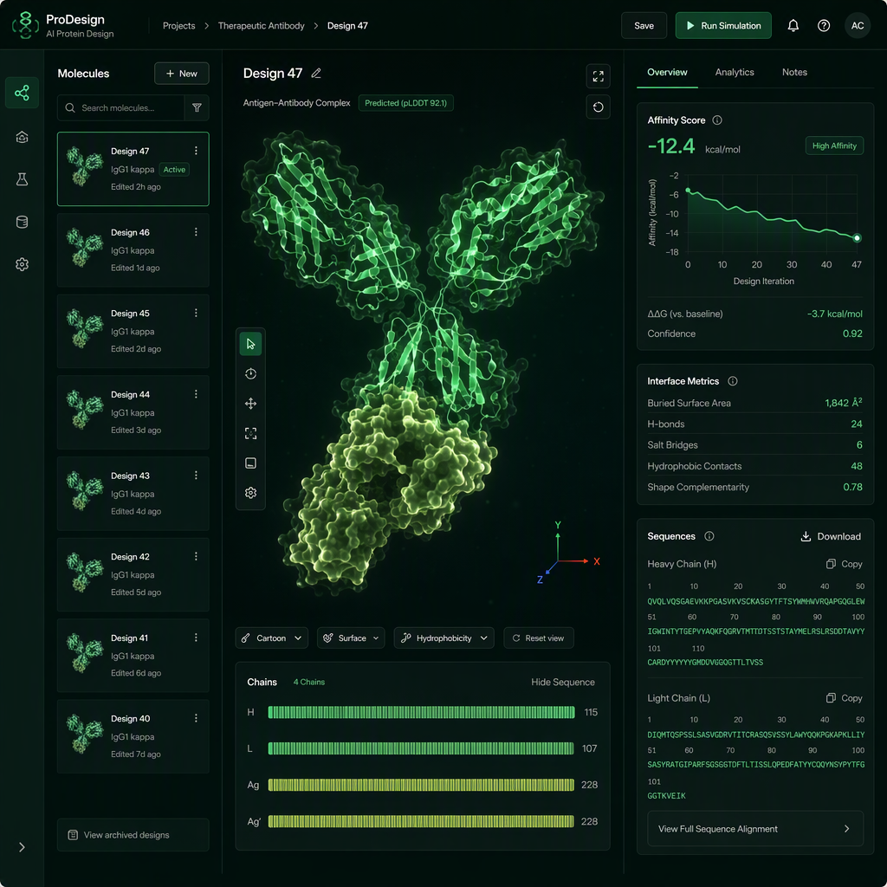

百奥几何以自研蛋白质生成式基础模型 GeoFlow 与高通量湿实验闭环平台,聚焦抗体发现与蛋白工程 —— 推动大分子药物研发从「筛选」走向「设计」。
图灵奖得主 Yoshua Bengio 担任首席科学顾问 · 团队核心参与 NVIDIA 开源蛋白质大模型 La Proteina

自然进化是有用的先验,但对困难靶点而言也是强约束。生物药研发对象正逐步转向复杂靶点、受限表位与新型药物模态,传统发现路径面临三重结构性挑战。
研发正转向高度复杂靶点 —— GPCR、多跨膜蛋白、保守性自身抗原。动物免疫与文库筛选在此类靶点上频频失效。
常规全长 IgG 对狭窄、凹陷或受遮挡表位的结合可及性可能受限,隐蔽表位长期被视为「难以成药」。
ADC、双特异性抗体、RDC 与环肽等新型药物模态存在巨大未满足需求,呼唤全新的分子构建能力。
以 GeoFlow 与并行实验验证构建「设计 — 验证 — 学习 — 再设计」闭环:模型生成候选,实验验证性能,数据驱动持续优化。公司正加速建设高通量自动化实验室,进一步提升闭环通量。
将预期功能转化为可计算、可验证的设计要求:目标靶点或作用表位、活性选择性与亲和力、稳定性与表达。
围绕目标生成并优选分子,计算缩小候选空间,系统性覆盖天然序列之外的全新设计区域。
完成表达、纯化与质控,测量结合、活性、表达与稳定性,获得候选分子关键性能数据。
识别优选、保留有效候选,标准化数据回流模型,结果进入下一轮设计,持续迭代优化。
GeoFlow Code 将蛋白质设计的生成、评估与优化抽象为可自由组合的设计语言 —— 从「可编程」到「无需编程」:研发人员只需以自然语言描述设计意图,复杂需求即被自动翻译、组装并执行,直达可用于湿实验验证的候选分子。


自然语言描述设计目标,自动完成靶点与竞对调研
序列与结构对齐,表位在 3D 结构上高亮呈现
自主编写设计流程:生成、评估、优化算子自由组合
多轮设计自动运行,不理想即推导重来,无需人工干预
自主挑选实验分子,直接输出可验证的候选清单
# 以自然语言写下的设计意图(示意) target = "CLDN6" # Claudin 家族高度同源 bind_to = "CLDN6" avoid = ["CLDN3", "CLDN4", "CLDN9"] affinity = pM.range # 成药亲和力标准 developability = ["expression", "specificity", "Tm"] GeoFlow.design(intent).run()
GeoBiologics 是面向研发团队的生成式抗体发现与蛋白质设计平台,GeoFlow 模型能力已开放在线体验。输入靶点与表位,获得结构预测与从头设计结果。

自 2024 年起以每年一代的速度迭代:从超越 AlphaFold3,到统一预测与生成,到多步推理,再到蛋白质设计编程语言 —— 持续定义生成式蛋白质设计的技术边界。
基石:性能超越。抗原-抗体结构预测性能超越 AlphaFold3;完成生成式 AI 与湿实验双平台搭建。
创新:预测与生成统一。结构预测与从头设计一体化,直接获得低纳摩尔级候选抗体。
创新:多步推理。从单步推理进入多步推理时代,靶点命中率 0.1% → 18%,亲和力进入 nM 量级。
创新:GeoFlow Code。蛋白质设计编程语言;对接基准合格率 70%,亲和力进入 pM 量级,覆盖三类分子模态。
LATEST以下数据均来自「计算设计 + 湿实验」闭环的真实项目。从搁置靶点到可开发结合分子,最快约 3 周。
基于约 20 万条 IgG-抗原序列与 1 万+ 复合物结构训练;无需免疫,原生人源化。
多靶点验证:PD-1(9 nM)、InsR(16 nM)、Nectin-4(3.8 nM)。
在 70 个从头设计的 VHH 中,发现 3 nM 亲和力、>200 倍选择性的命中分子 —— 可区分仅 2 个氨基酸差异的高度同源跨膜靶点。
「AI 在科学领域最重要的应用,是让真正困难的设计问题变得可计算。百奥几何正在把这一理念变成经实验验证的现实。」
公开基准合格率 70% 业界领先;覆盖蛋白、抗体、环肽三类模态;复杂需求自动翻译为设计语言。
进入发布专题 →上海生物医药创新转化基金、国科投资、达晨财智、星连资本联合领投,高榕资本等跟投。
阅读全文 →GeoEnzyme 智能酶工程平台在真实产业场景中验证价值,多目标同步优化。
阅读全文 →